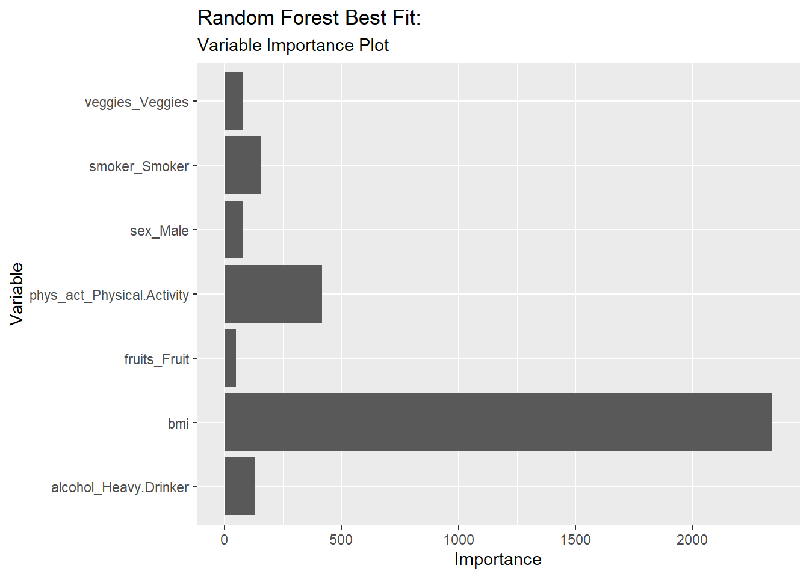
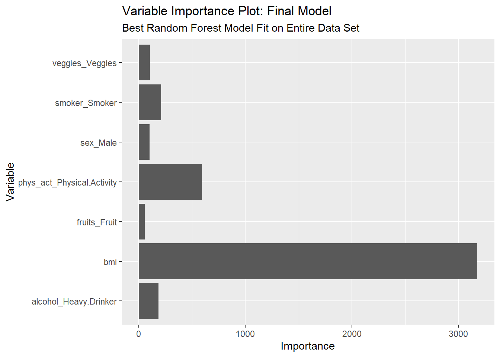

The data used in this analysis is from the Diabetes Health Indicators Dataset available at kaggle. The specific data file used is diabetes_binary_health_indicators_BRFSS2015.csv. This file consists of a cleaned data set of 253,680 survey responses to the CDC’s Behavioral Risk Factor Surveillance System (RFSS) 2015. This analysis is focused on the lifestyle factors of smoking, drinking, physical activity, eating fruits and vegetables, as well as the basic body features of BMI, sex, and age, with the goal of building a model of these variables to predict diabetes status. A more detailed description of the variables is given in the EDA portion of the project.
The purpose of this modeling exercise is to fit both classification tree and random forest models to the variables under consideration in order to predict diabetes status. A best fit model of each type will be selected, and then an overall best fit. The modeling data is split into training and test sets, five-fold cross-validation is used to to fit each model type, and log-loss is used as the metric for selecting models.
The ultimate goal of the entire project is to fit predictive models to the variables, choose a best fit model of each type and then an overall best fit, and then house that model in an API within a docker container.
Preliminary Tasks
Load packages, read in and transform data, and create data set for modeling.
Load packages:
library(tidyverse)
── Attaching core tidyverse packages ──────────────────────── tidyverse 2.0.0 ──
✔ dplyr 1.1.4 ✔ readr 2.1.5
✔ forcats 1.0.0 ✔ stringr 1.5.1
✔ ggplot2 4.0.1 ✔ tibble 3.3.0
✔ lubridate 1.9.4 ✔ tidyr 1.3.1
✔ purrr 1.0.4
── Conflicts ────────────────────────────────────────── tidyverse_conflicts() ──
✖ dplyr::filter() masks stats::filter()
✖ dplyr::lag() masks stats::lag()
ℹ Use the conflicted package (<http://conflicted.r-lib.org/>) to force all conflicts to become errors
Rows: 253680 Columns: 22
── Column specification ────────────────────────────────────────────────────────
Delimiter: ","
dbl (22): Diabetes_binary, HighBP, HighChol, CholCheck, BMI, Smoker, Stroke,...
ℹ Use `spec()` to retrieve the full column specification for this data.
ℹ Specify the column types or set `show_col_types = FALSE` to quiet this message.
d_data <- original_diabetes_data |>rename("dia_ind"="Diabetes_binary","bp"="HighBP","chol"="HighChol","chol_ch5"="CholCheck","bmi"="BMI","smoker"="Smoker","stroke"="Stroke","hrt_dis_atk"="HeartDiseaseorAttack","phys_act"="PhysActivity","fruits"="Fruits","veggies"="Veggies","alcohol"="HvyAlcoholConsump","h_care"="AnyHealthcare","no_doc"="NoDocbcCost","gen_health"="GenHlth", "m_health"="MentHlth", "ph_health"="PhysHlth","walk_diff"="DiffWalk", "sex"="Sex", "age"="Age", "edu"="Education", "income"="Income")d_data <- d_data |>mutate(dia_ind =factor(dia_ind, levels =c(0, 1), labels =c("No Diabetes", "Diabetes")), bp =factor(bp, levels =c(0, 1), labels =c("No High BP", "High BP")), chol =factor(chol, levels =c(0, 1), labels =c("No High Cholesterol", "High Cholesterol")), chol_ch5 =factor(chol_ch5, levels =c(0, 1),labels =c("No 5yr Cholesterol Check", "5yr Cholesterol Check")),smoker =factor(smoker, levels =c(0, 1),labels =c("Non-Smoker", "Smoker")),stroke =factor(stroke, levels =c(0, 1),labels =c("No Stroke", "Stroke")), hrt_dis_atk =factor(hrt_dis_atk, levels =c(0, 1),labels =c("No Heart Disease/Attack", "Heart Disease/Attack")),phys_act =factor(phys_act, levels =c(0, 1),labels =c("No Physical Activity", "Physical Activity")), fruits =factor(fruits, levels =c(0, 1),labels =c("No Fruit", "Fruit")), veggies =factor(veggies, levels =c(0, 1),labels =c("No Veggies", "Veggies")), alcohol =factor(alcohol, levels =c(0, 1),labels =c("Not Heavy Drinker", "Heavy Drinker")), h_care =factor(h_care, levels =c(0, 1),labels =c("No Healthcare Coverage", "Healthcare Coverage")), no_doc =factor(no_doc, levels =c(0, 1),labels =c("No Missed Visit Due to Money", "Missed Visit Due to Money")), gen_health =factor(gen_health, levels =c(1, 2, 3, 4, 5),labels =c("Excellent General", "Very Good General Health", "Good General Health", "Fair General Health", "Poor General Health")),m_health =factor(m_health, levels =c(0:30),labels =c(0:30)),ph_health =factor(ph_health, levels =c(0:30),labels =c(0:30)),walk_diff =factor(walk_diff, levels =c(0, 1),labels =c("No Difficulty Walking", "Difficulty Walking")),sex =factor(sex, levels =c(0, 1),labels =c("Female", "Male")),age =factor(age, levels =c(1:13),labels =c("Ages 18 to 24", "Ages 25 to 29", "Ages 30 to 34", "Ages 35 to 39","Ages 40 to 44", "Ages 45 to 49", "Ages 50 to 54", "Ages 55 to 59","Ages 60 to 64","Ages 65 to 69","Ages 70 to 74","Ages 75 to 79","Ages 80 or older")), edu =factor(edu, levels =c(1:6),labels =c("Kindergarten or Less", "Grades 1 to 8", "Some High School", "High School Graduate", "Some College or Technical School", "College Graduate")),income =factor(income, levels =c(1:8),labels =c("Less than $10,000","$10,000 to less than $15,000","$15,000 to less than $20,000","$20,000 to less than $25,000","$25,000 to less than $35,000", "$35,000 to less than $50,000","$50,000 to less than $75,000","$75,000 or more")))
# A tibble: 177,575 × 9
dia_ind bmi smoker phys_act fruits veggies alcohol sex age
<fct> <dbl> <fct> <fct> <fct> <fct> <fct> <fct> <fct>
1 Diabetes 30 Smoker No Physical Act… Fruit Veggies Not He… Fema… Ages…
2 Diabetes 25 Smoker Physical Activi… Fruit Veggies Not He… Male Ages…
3 Diabetes 28 Non-Smoker No Physical Act… No Fr… Veggies Not He… Fema… Ages…
4 Diabetes 23 Smoker Physical Activi… No Fr… No Veg… Not He… Male Ages…
5 Diabetes 37 Smoker No Physical Act… No Fr… Veggies Not He… Male Ages…
6 Diabetes 27 Smoker No Physical Act… Fruit Veggies Not He… Fema… Ages…
7 Diabetes 24 Smoker No Physical Act… No Fr… No Veg… Not He… Fema… Ages…
8 Diabetes 33 Smoker No Physical Act… No Fr… Veggies Not He… Fema… Ages…
9 Diabetes 27 Smoker No Physical Act… No Fr… Veggies Not He… Fema… Ages…
10 Diabetes 27 Non-Smoker Physical Activi… Fruit Veggies Not He… Fema… Ages…
# ℹ 177,565 more rows
m_test #take a look
# A tibble: 76,105 × 9
dia_ind bmi smoker phys_act fruits veggies alcohol sex age
<fct> <dbl> <fct> <fct> <fct> <fct> <fct> <fct> <fct>
1 No Diabetes 40 Smoker No Physical … No Fr… Veggies Not He… Fema… Ages…
2 No Diabetes 28 Non-Smoker No Physical … Fruit No Veg… Not He… Fema… Ages…
3 No Diabetes 24 Non-Smoker No Physical … No Fr… Veggies Not He… Male Ages…
4 No Diabetes 26 Smoker No Physical … No Fr… Veggies Not He… Fema… Ages…
5 No Diabetes 33 Non-Smoker Physical Act… No Fr… No Veg… Not He… Fema… Ages…
6 No Diabetes 28 Non-Smoker No Physical … No Fr… No Veg… Heavy … Male Ages…
7 No Diabetes 38 Smoker No Physical … Fruit Veggies Not He… Fema… Ages…
8 Diabetes 27 Non-Smoker Physical Act… Fruit Veggies Not He… Fema… Ages…
9 Diabetes 28 Smoker No Physical … No Fr… Veggies Not He… Male Ages…
10 Diabetes 34 Smoker Physical Act… No Fr… No Veg… Not He… Fema… Ages…
# ℹ 76,095 more rows
Create CV folds on training data:
m_CV_folds <-vfold_cv(m_train, 5)
Classification Tree Model
A classification tree is a type of decision tree. It is a flexible, nonlinear model in which the predictor space is divided into regions, and a prediction value is assigned to each region. The most common classification for a region is usually assigned to that region. The modeling algorithm determines the best variable to start with (the most influential) and where to split the variables. The values of the variables determine the value of the prediction, according to the fitted decision tree.
Using the tidymodels framework, we will create a recipe, a model engine, and a workflow; fit the workflow to the CV folds; collect metrics and determine best classification tree model (best tuning parameter(s)), finalize the workflow and fit that best model to the entire training data set.
The regression tree model just fit to the diabetes data was an individual tree model. When prediction is the only goal, ensemble tree models can be used. Ensemble tree models are built from an average of many trees. To build many trees, bootstrapping is used to create many data samples. Each sample is then used to build an individual tree model, and the ensemble model is an average of the many individual models. This method decreases variance over individual tree fits.
Non-parametric bootstrapping involves treating the original data sample as the population. Additional samples are created by drawing from the “population” with replacement. Building ensemble tree models using bootstrap aggregation is called bagging. The prediction is the most common classification for that region of predictor space across all of the fitted trees.
Random forest models are based on the same ideas as bagging, except that a random, set number of predictors is used at each step instead of using all of the predictors for each split. This improves the model over bagging in situations where a very strong predictor exists, causing more correlation between trees resulting in a smaller reduction in variance from aggregation. Random forest models protect against domination of the model by one or two good predictors.
Similar to the classification tree model, a random forest model will be generated for the diabetes data set using the tidymodels framework by defining a recipe, a model specification, and a workflow; fitting the workflow to the CV folds, collecting metrics and determining the best random forest model (best tuning parameter(s)), and fitting that best model to the entire training data set.
Create recipe: This is the same recipe used for the classification tree model.
Visualize the random forest best fit with a variable importance plot:
#function for extracting importance valuesget_rf_imp <-function(random_forest_object) {extract_fit_parsnip(random_forest_object) |> vip::vi()}# use the function on the best random forest fitrf_importance <-get_rf_imp(random_forest_best_fit)#plot the importance valuesggplot(rf_importance, aes(x = Importance, y = Variable)) +geom_bar(stat ="identity") +labs(title ="Random Forest Best Fit:", subtitle ="Variable Importance Plot")

According to the plot, the most important variable considered is BMI, by far. This parallels the classification tree’s first split on BMI. The next most important variable in the random forest according to the plot of the model is physical activity.
Final Model Selection
Compare the performance of both best fit models on the test data:
# A tibble: 2 × 5
Model .metric .estimator .estimate .config
<chr> <chr> <chr> <dbl> <chr>
1 Best Classification Tree mn_log_loss binary 0.382 pre0_mod0_post0
2 Best Random Forest mn_log_loss binary 0.371 pre0_mod0_post0
The random forest best model has lower mean log-loss than the classification tree best model. The best-fit random forest model is the final model selected.
Final Model
Fit the overall best model (the best random forest model) to the entire data set.
View the final model as a variable importance plot:
var_importance <-get_rf_imp(final_model) #function to extract importance values#plot the importance valuesggplot(var_importance, aes(x = Importance, y = Variable)) +geom_bar(stat ="identity") +labs(title ="Variable Importance Plot: Final Model", subtitle ="Best Random Forest Model Fit on Entire Data Set")

Export modeling data set and final model for use in associated API:
#not yet sure best location for storing thesewrite_csv(m_data, "modelAPI.R/diabetes_modeling_data.csv")write_csv(m_data, "diabetes_modeling_data.csv")saveRDS(final_model, file ="modelAPI.R/final_model.rds")saveRDS(final_model, file ="final_model.rds")